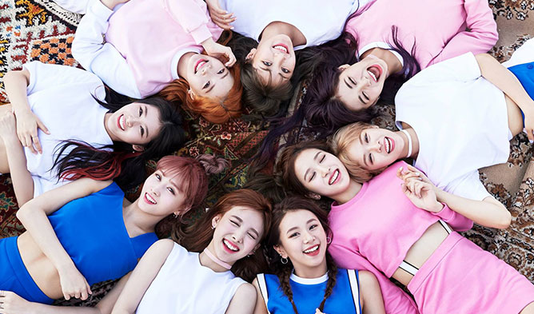
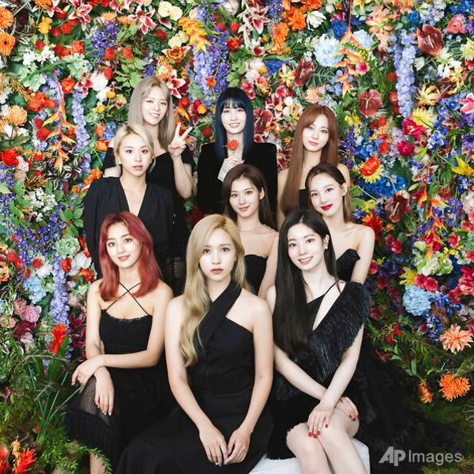
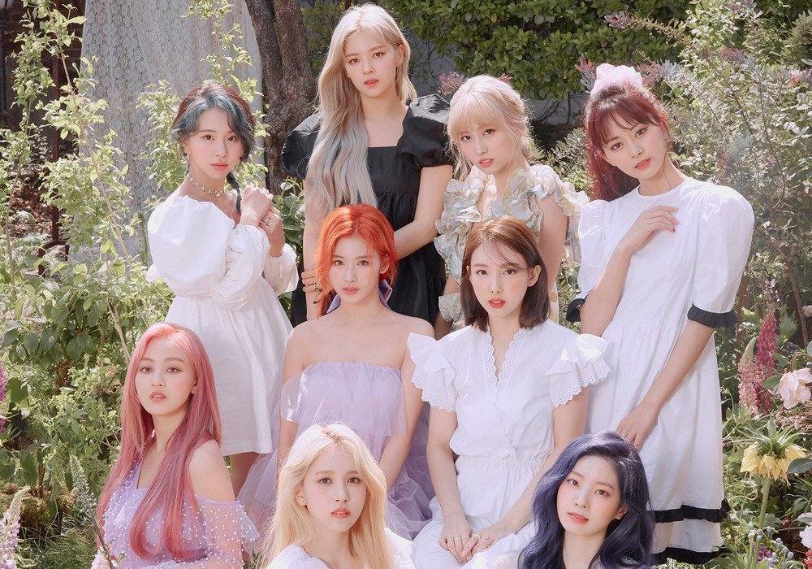
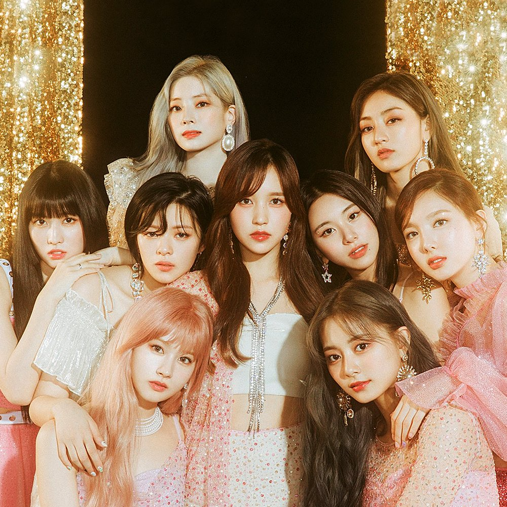
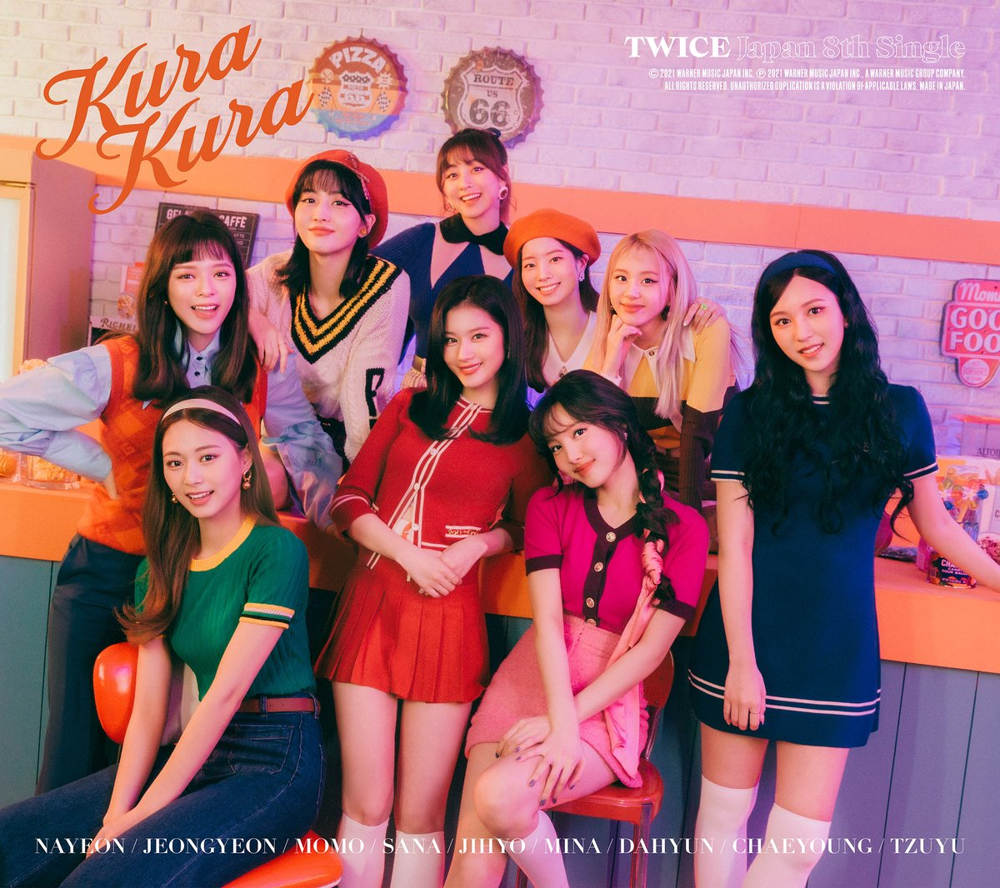
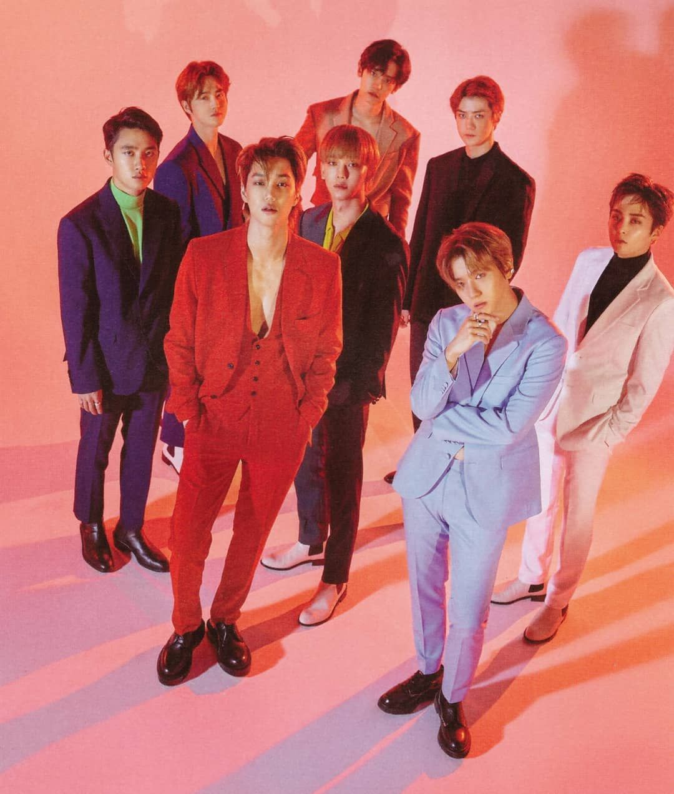
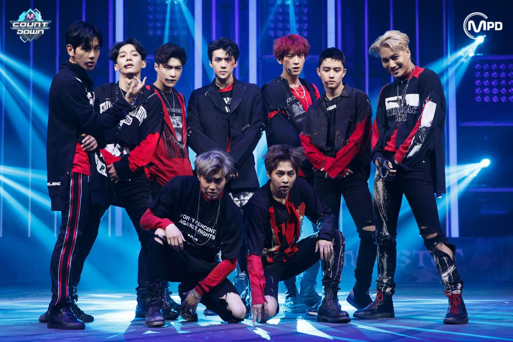
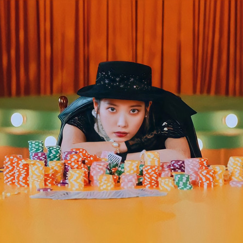
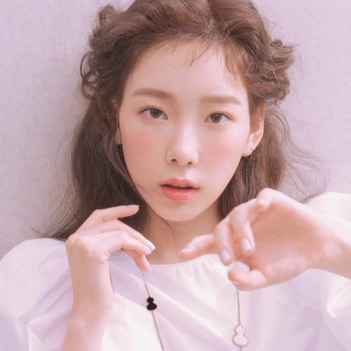

TOP 1

24/7
“24/7” is a song by Twice that was released on October 30th, 2017, through JYP Entertainment. It is “the median song” in Twice’s first Korean studio album titled Twicetagram.
TOP 2
Turtle
JYP Entertainment released “Turtle” by Twice on October 30th, 2017. From the lyrics, we can see that this song describes the relationship between a woman and a man who like each other but they’re both too embarrassed to say it.
TOP 3
Someone Like Me
“Someone Like Me” is a song that suits serene feelings. “Someone Like Me” is a song that is listed as one of the tracks on TWICE’s Signal EP. Signal is TWICE’s fourth EP that they released since their debuted in 2016.
TOP 4
Be As One
As heartwarming as it sounds, the song “Be as ONE” by Twice is a song that TWICE meant as a gift for ONCE. “Be as ONE” is an encouraging and thankful song.
T0P 5
Breakthrough
Twice announced the release of their sixth Japanese single titled “Breakthrough” on April 6th, 2019. This song is about how to not care too much about what people say to us, while keeping our best work to move forward for a better future.
TOP 6
Touchdown
“Touchdown” is a song performed by the K-pop girl group which made a debut under JYP Entertainment, TWICE. “Touchdown” depicts the story of a girl telling a guy not to resist because he will fall in love with her.
TOP 7
Growl
"Growl" is a song recorded by South Korean–Chinese boy band Exo, released on August 5, 2013, for the repackaged edition of their first studio album Growl. The song is known as Exo's breakthrough single, with over two million downloads in South Korea.
TOP 8
Monster
As part of new album EX’ACT, EXO have reveled in both the darkness and the light. Monster‘s bass-heavy assault takes us into the nighttime hours, pulling the group back to the dramatic, dark fantasia of older material like Overdose, Mama or Wolf.
TOP 9
Coin
"Coin" is one of two title songs from IU's fifth studio album "Lilac". The song was premiered on March 26, 2021, accompanied by a music video in which IU plays a professional gambler in a retro setting. The song is about going all-in. IU composed the track.
TOP 10
All About You
"All About You" is a song recorded by South Korean singer Taeyeon for the soundtrack of the 2019 drama series Hotel del Luna. It was nominated for Best OST at the 12th Korea Drama Awards, and won OST Award at the 2020 Seoul Music Awards.